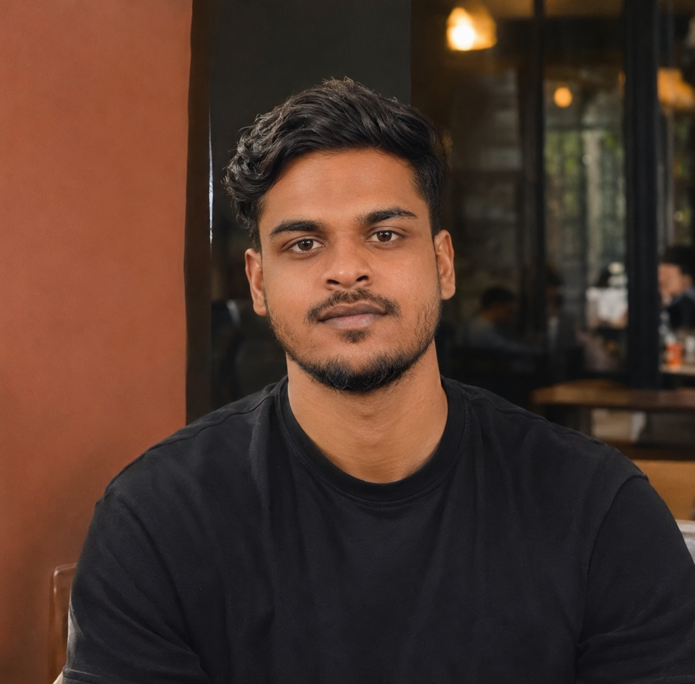

dear reader,
I'll be straight with you: I don't have much to show yet. I haven't built a product or won anything lately. What I have is a plan that changed, a clearer reason for being here, and a lot of things I'm only beginning. This website is one of them.
So this isn't a resume in the usual sense. It's a letter about where I come from, what pulls me in, and where I'm trying to go.
chapter one
Where it started
I was born in Dhanbad, Jharkhand, and for most of my childhood I was the quiet kid. Shy, a little timid, and happiest studying. I did well in school, and I had friends, but I mostly only talked to them.
Sport was the exception, even if I mostly watched it. Football was my first love, and I fell for cricket the first time I saw Virat Kohli. I was too shy to go to the ground, so I played alone outside my house: throw a ball at the wall, hit it back when it bounced off. Slowly the kids in my colony started coming over, and we played in the alley.
Then a friend said, “Let's just go for a round,” and took me to the ground. I sat there watching the older boys play cricket and football, and I realised there was a whole world of sport beyond my alley. I started going regularly. I was still silent, and I waited for one of the bhaiyas to pick me for his team, which usually meant I was one of the last.
In Class 8, our sports teacher told us that once the lockdown was over, he'd be back with trials for every school team. I signed up for volleyball. I was good at it, but all my friends had gone to basketball, and the two courts were right next to each other. One day, during a water break, I ran out of the volleyball camp and told him:
“Sir, I don't want to play volleyball. I want to play basketball.”
Looking back, almost everything I learned in those early years came through sport. It was only in Classes 9 to 12 that I started noticing other things pulling at me.
chapter two
What pulls me in
The first thing outside sport that really pulled me in was entrepreneurship. I came across a founder online. People have strong opinions about him, but what I took from him wasn't advice. It was a picture: that even if you don't come from anything, you can become a lot by doing work that matters. He never told me what to do. He just gave me a direction, and I started reading non-fiction and following it from there.
In Classes 11 and 12 I made a friend who is one of the most artistic people I know. Through him I started noticing literature and the other sides of the world I had never paid attention to. That's where the pull toward art, books and unfamiliar places began.
chapter three
How I got here
When Class 12 ended, I had decided I wasn't going to college. I thought it would waste my time, and that I could learn everything online and start my own agency. My family wanted me to have a degree, and that disagreement went on for a while.
Then one day I searched for online courses and found the BBA in Digital Business and Entrepreneurship, a program I had never heard of. I read about how it works and what it offers, and it fit my interest in entrepreneurship. I'll be honest: part of why I chose it was that it kept things peaceful at home and bought me three years to work on what I wanted to build.
chapter four
What I'm doing now
Here's something I've noticed about myself lately: I'm good at planning. What I've been slower at is acting. I'm working on changing that. Right now:
- Learning HTML and CSS, and finishing this website
- Studying the BBA in Digital Business and Entrepreneurship
- Training for the Jain University basketball trials in 2027
- Reading widely, from non-fiction to literature
This site is the first thing in a while that I'm actually finishing.
chapter five
What comes next
When Class 12 ended, my plan was simple: skip college, start an AI automation agency, and let basketball wait. Once the business was making money, I'd hire a trainer and a chef, and only then go after the game properly.
That plan changed. I no longer see college as a waste of time, because I now know why I'm here. Next year I'll go to the trials for the Jain University basketball team, and for the next four years I'll give basketball everything I have and see how high I can rise in Indian basketball, and maybe abroad one day.
What guides me now is simpler: do what I'm genuinely curious about, instead of grinding on one thing only because it looks like the way to somewhere else.
Say hello
If something here connected with you, I'd like to hear from you.
Aditya. To be continued.